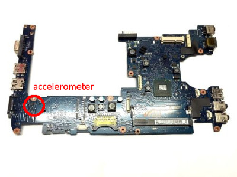
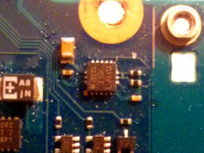
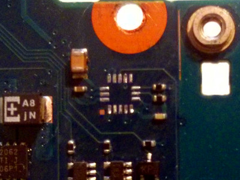
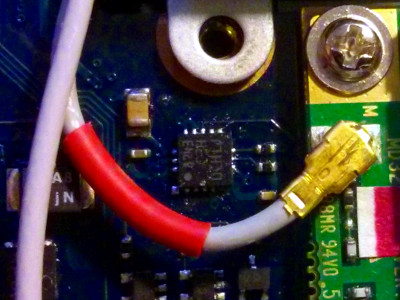

Return to index HERE
|  |
| LIS331DL location |
root@SNB30-UBUNTU:~# i2cdetect -li2c-3 i2c i915 gmbus dpc I2C adapteri2c-1 i2c i915 gmbus vga I2C adapteri2c-4 i2c i915 gmbus dpb I2C adapteri2c-2 i2c i915 gmbus panel I2C adapteri2c-0 i2c i915 gmbus ssc I2C adapterroot@SNB30-UBUNTU:~# i2cdetect -y 2
0 1 2 3 4 5 6 7 8 9 a b c d e f00: -- -- -- -- -- -- -- -- -- -- -- -- --10: -- -- -- -- -- -- -- -- -- -- -- -- -- -- -- --20: -- -- -- -- -- -- -- -- -- -- -- -- -- -- -- --30: -- -- -- -- -- -- -- -- -- -- -- -- -- -- -- --40: -- -- -- -- -- -- -- -- -- -- -- -- -- -- -- --50: 50 -- -- -- -- -- -- -- -- -- -- -- -- -- -- --60: -- -- -- -- -- -- -- -- -- -- -- -- -- -- -- --70: -- -- -- -- -- -- -- --
root@SNB30-UBUNTU:~# modprobe i2c-devroot@SNB30-UBUNTU:~# modprobe i2c-i801root@SNB30-UBUNTU:~# i2cdetect -li2c-3 i2c i915 gmbus dpc I2C adapteri2c-1 i2c i915 gmbus vga I2C adapteri2c-6 smbus SMBus I801 adapter at 18a0 SMBus adapteri2c-4 i2c i915 gmbus dpb I2C adapteri2c-2 i2c i915 gmbus panel I2C adapteri2c-0 i2c i915 gmbus ssc I2C adapteri2c-5 i2c i915 gmbus dpd I2C adapterroot@SNB30-UBUNTU:~# i2cdetect -y 6 0 1 2 3 4 5 6 7 8 9 a b c d e f00: -- -- -- -- -- 08 -- -- -- -- -- -- --10: -- -- -- -- -- -- -- -- -- -- -- -- -- 1d -- --20: -- -- -- -- -- -- -- -- -- -- -- -- -- -- -- --30: -- -- -- -- -- -- -- -- -- -- -- -- -- -- -- --40: -- -- -- -- 44 -- -- -- -- -- -- -- -- -- -- --50: 50 -- -- -- -- -- -- -- -- -- -- -- -- -- -- --60: -- -- -- -- -- -- -- -- -- 69 -- -- -- -- -- --70: -- -- -- -- -- -- -- --root@SNB30-UBUNTU:~# i2cdump -y 6 0x69No size specified (using byte-data access) 0 1 2 3 4 5 6 7 8 9 a b c d e f 0123456789abcdef00: 0d 0d 0d 0d 0d 0d 0d 0d 0d 0d 0d 0d 0d 0d 0d 0d ????????????????10: 0d 0d 0d 0d 0d 0d 0d 0d 0d 0d 0d 0d 0d 0d 0d 0d ????????????????20: 0d 0d 0d 0d 0d 0d 0d 0d 0d 0d 0d 0d 0d 0d 0d 0d ????????????????30: 0d 0d 0d 0d 0d 0d 0d 0d 0d 0d 0d 0d 0d 0d 0d 0d ????????????????40: 0d 0d 0d 0d 0d 0d 0d 0d 0d 0d 0d 0d 0d 0d 0d 0d ????????????????50: 0d 0d 0d 0d 0d 0d 0d 0d 0d 0d 0d 0d 0d 0d 0d 0d ????????????????60: 0d 0d 0d 0d 0d 0d 0d 0d 0d 0d 0d 0d 0d 0d 0d 0d ????????????????70: 0d 0d 0d 0d 0d 0d 0d 0d 0d 0d 0d 0d 0d 0d 0d 0d ????????????????80: 65 83 ff 77 ff 00 00 06 10 25 01 b6 0d 00 0d 00 e?.w...??%???.?.90: 00 00 06 00 6a 00 00 00 14 00 00 00 00 ff ff ff ..?.j...?.......a0: 65 83 ff 77 ff 00 00 06 10 25 01 b6 0d 00 0d 00 e?.w...??%???.?.b0: 00 00 06 00 6a 00 00 00 14 00 00 00 00 ff ff ff ..?.j...?.......c0: 65 83 ff 77 ff 00 00 06 10 25 01 b6 0d 00 0d 00 e?.w...??%???.?.d0: 00 00 06 00 6a 00 00 00 14 00 00 00 00 ff ff ff ..?.j...?.......e0: 65 83 ff 77 ff 00 00 06 10 25 01 b6 0d 00 0d 00 e?.w...??%???.?.f0: 00 00 06 00 6a 00 00 00 14 00 00 00 00 ff ff ff ..?.j...?.......|  |
| LIS331DL (marking "33DL") |
|  |
| desoldered PCB |
|  |
| LIS3DH(marking "C3H") |
root@SNB30-UBUNTU:~# i2cdetect -y 6 0 1 2 3 4 5 6 7 8 9 a b c d e f00: -- -- -- -- -- 08 -- -- -- -- -- -- --10: -- -- -- -- -- -- -- -- -- 19 -- -- -- -- -- --20: -- -- -- -- -- -- -- -- -- -- -- -- -- -- -- --30: -- -- -- -- -- -- -- -- -- -- -- -- -- -- -- --40: -- -- -- -- 44 -- -- -- -- -- -- -- -- -- -- --50: 50 -- -- -- -- -- -- -- -- -- -- -- -- -- -- --60: -- -- -- -- -- -- -- -- -- 69 -- -- -- -- -- --70: -- -- -- -- -- -- -- --root@SNB30-UBUNTU:~# i2cdump -y 6 0x19No size specified (using byte-data access) 0 1 2 3 4 5 6 7 8 9 a b c d e f 0123456789abcdef00: 00 00 00 00 00 00 00 00 00 00 00 00 00 00 00 33 ...............310: 88 9e 87 20 a0 32 1d 21 1b 90 90 85 c0 00 10 00 ??? ?2?!?????.?.20: 07 00 00 00 00 00 00 00 00 00 00 00 00 00 00 20 ?.............. 30: 00 00 00 00 00 00 00 00 00 00 00 00 00 00 00 00 ................read STATUS_REGif STATUS_REG(3)=0 then goto 1if STATUS_REG(3)=1 then some data have been overwrittenread OUT_Xread OUT_Yread OUT_Zdata processinggoto 1uint8_t acc_x_l = 0;uint8_t acc_x_h = 0;int16_t acc_x = 0;acc_x = (acc_x_h << 8)|acc_x_l;acc_x >>= 4;>> LIS3DH found ! ID = 0x33>> dispaly all registers 0 1 2 3 4 5 6 7 8 9 A B C D E F 00 | 00 00 00 00 00 00 00 00 00 00 00 00 00 00 00 33 10 | 88 9E 87 20 A0 32 1D 21 1B 90 90 85 C0 00 10 00 20 | 07 00 00 00 00 00 00 00 00 00 00 00 00 00 00 20 30 | 00 00 00 00 00 00 00 00 00 00 00 00 00 00 00 00 >> please enter 'y' to set registersy>> enable sensor>> enable high resolution>> enable temperature sensor CTRL_REG1 0x20 = 0x77 CTRL_REG4 0x23 = 0x88 TEMP_CFG_REG 0x1F = 0xC0>> please enter 'y' to read from sensoryX = -49, Y = -1, Z = -945, T = 8X = -36, Y = 10, Z = -956, T = 8X = -56, Y = 15, Z = -965, T = 8X = -35, Y = 1, Z = -914, T = 9...